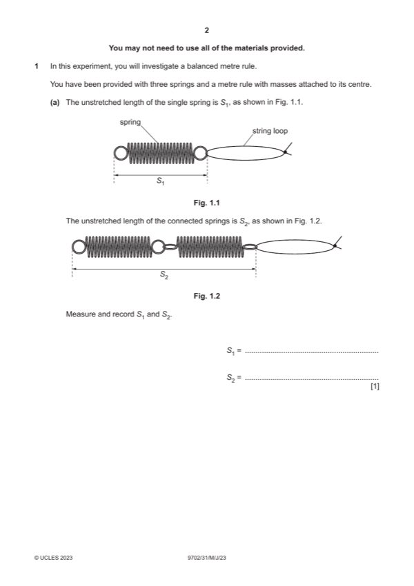

Question 1

Original paper page 2
Part 1(a) — solution
- Value of S1 with unit and 10.0 cm ⩾ S1 ⩾ 2.0 cm. 1
Mark points
- Value of S1 with unit and 10.0 cm ⩾ S1 ⩾ 2.0 cm. 1
Part 1(b)(i) — solution
Values of L1 and L2 to the nearest mm with unit. 1
Mark points
- Include the ideas shown in the solution above.
Part 1(b)(ii) — solution
e1 and e2 correctly calculated and e2 e1. 1
Mark points
- Include the ideas shown in the solution above.
Part 1(c) — solution
Five sets of readings of x (different values), L1 and L2 with correct trend (as x increases L1 decreases and L2 increases) 5
and without help from Supervisor scores 5 marks, four sets scores 4 marks, etc.
Range: 50.0 cm ⩽ xmin ⩽ 55.0 cm and xmax ⩾ 95.0 cm. 1
Column headings: 1
Each column heading must contain a quantity and a unit where appropriate.
The presentation of quantity and unit conforms to accepted scientific convention e.g. x / cm, L1 / cm, no unit for e2 / e1.
Calculation: Correct calculation of e2 / e1. 1
Mark points
- Include the ideas shown in the solution above.
Part 1(d)(i) — solution
Axes: 1
Axes must be labelled with the correct quantities.
Scales must be chosen so that the plotted points occupy at least half the graph grid in both x and y directions.
Scale markings are no more than 2 cm apart (one large square).
Sensible scales must be used. Scale must not be awkward (e.g. 3:10 or fractions).
Plotting of points: 1
All observations in the table must be plotted on the grid.
Diameter of plotted points must be less than half a small square.
Points must be plotted to an accuracy of half a small square in both x and y directions.
Quality: 1
Trend of points must be positive.
All points in the table must be plotted on the grid.
It must be possible to draw a straight line that is within 0.1 (to scale) on the e2 / e1 axis of all plotted points.
2023 Page 6 of 9
9702/31 Cambridge International AS & A Level – Mark Scheme May/June 2023
Mark points
- Include the ideas shown in the solution above.
Part 1(d)(ii) — solution
Line of best fit: 1
‘Best fit’ is judged by the balance of all points on the grid (at least 4 points) about the candidate’s line. There must be an
even distribution of points either side of the line along the full length.
Lines must not be kinked or thicker than half a small square.
Some candidates may choose to identify an anomalous point. If they identify one point as anomalous (e.g. by circling or
labelling) then this point is to be disregarded when judging the line of best fit. There must be at least 5 points left after the
anomalous point is disregarded.
Mark points
- Include the ideas shown in the solution above.
Part 1(d)(iii) — solution
- Intercept read directly from the graph, with read-off at x = 0, accurate to half a small square in y direction
- Correct read-off from a point on the line and substituted correctly into y = mx + c or an equivalent expression
Mark points
- Intercept read directly from the graph, with read-off at x = 0, accurate to half a small square in y direction
- Correct read-off from a point on the line and substituted correctly into y = mx + c or an equivalent expression
Part 1(e) — solution
- Value of P = candidate’s gradient and value of Q = – candidate’s intercept value. 1
Mark points
- Value of P = candidate’s gradient and value of Q = – candidate’s intercept value. 1
Part 1(f) — solution
W line shown with larger gradient (and larger negative value of y-intercept). 1
2023 Page 7 of 9
9702/31 Cambridge International AS & A Level – Mark Scheme May/June 2023
Mark points
- Include the ideas shown in the solution above.
Part 1 — solution
mark for each point up to a maximum of 4.
Mark points
- Include the ideas shown in the solution above.
Part 1 — solution
mark for each point up to a maximum of 4.
2023 Page 9 of 9
Mark points
- Include the ideas shown in the solution above.